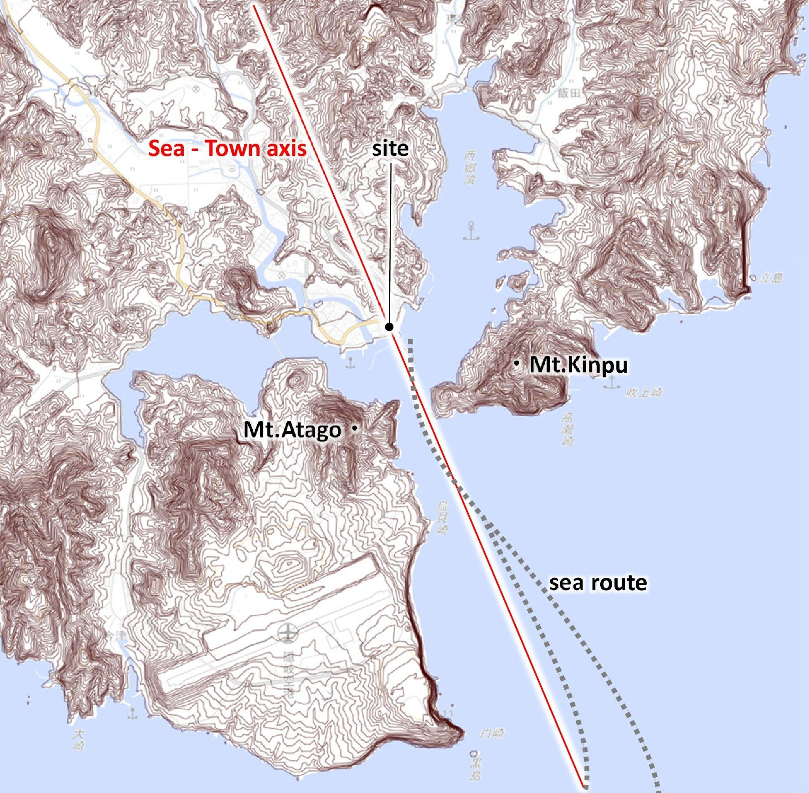
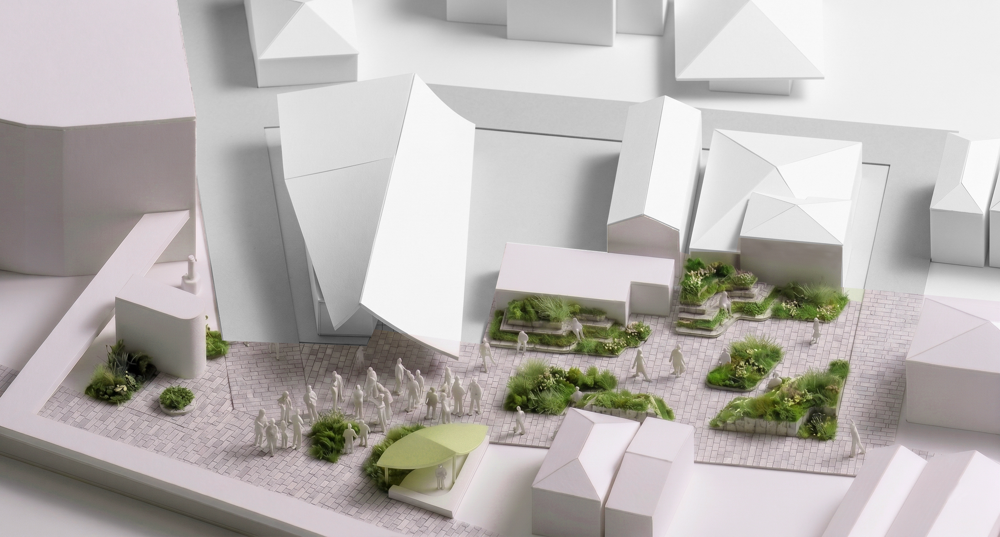
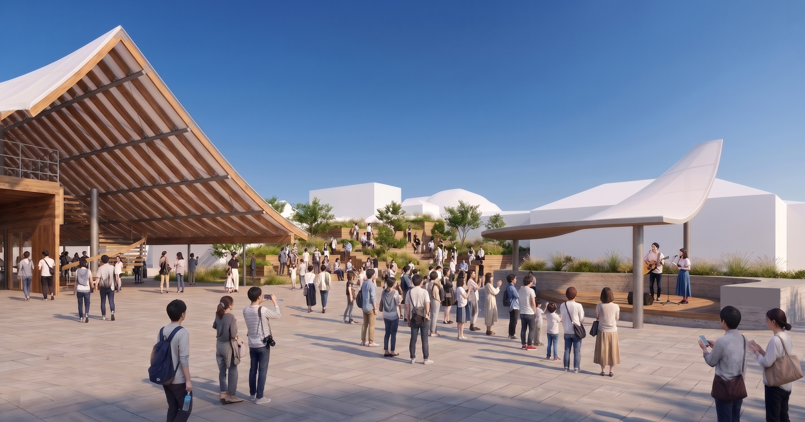
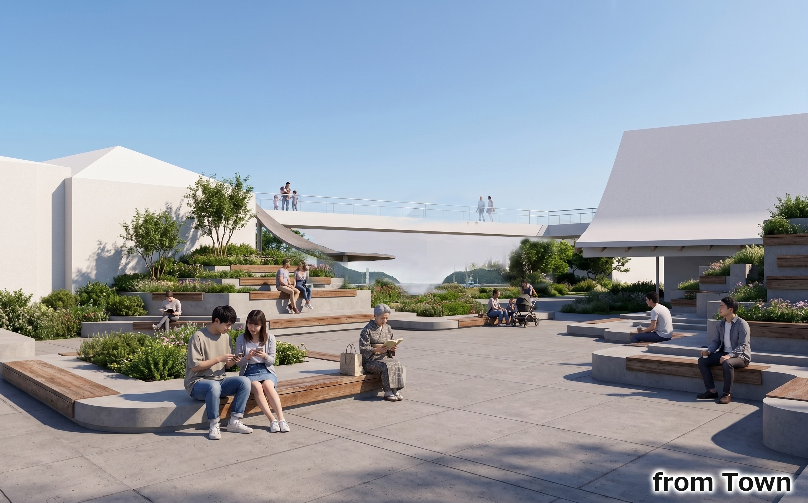
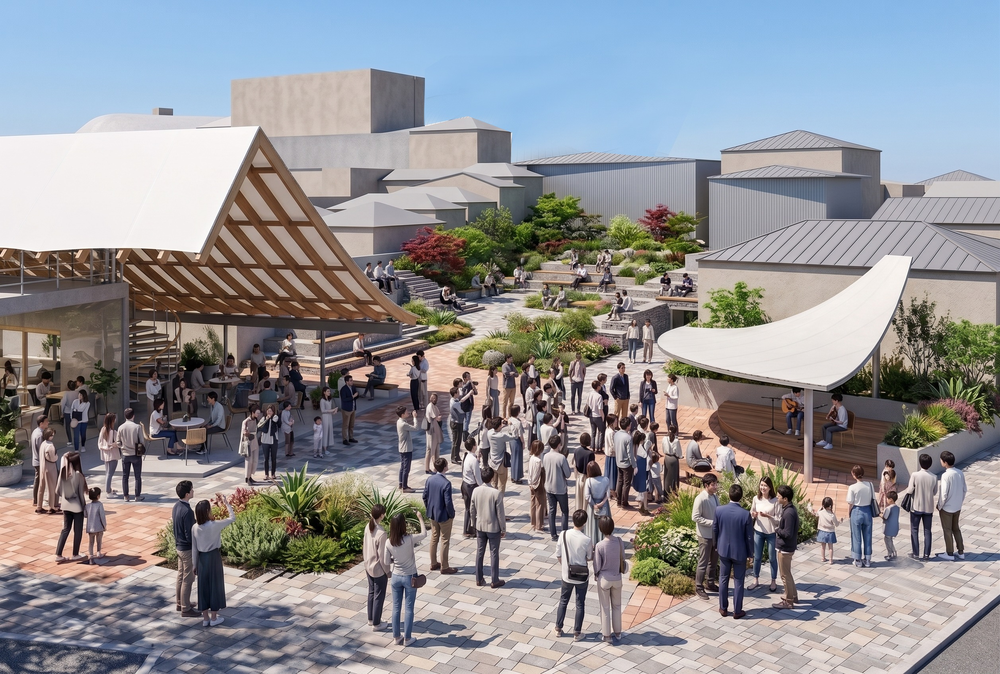
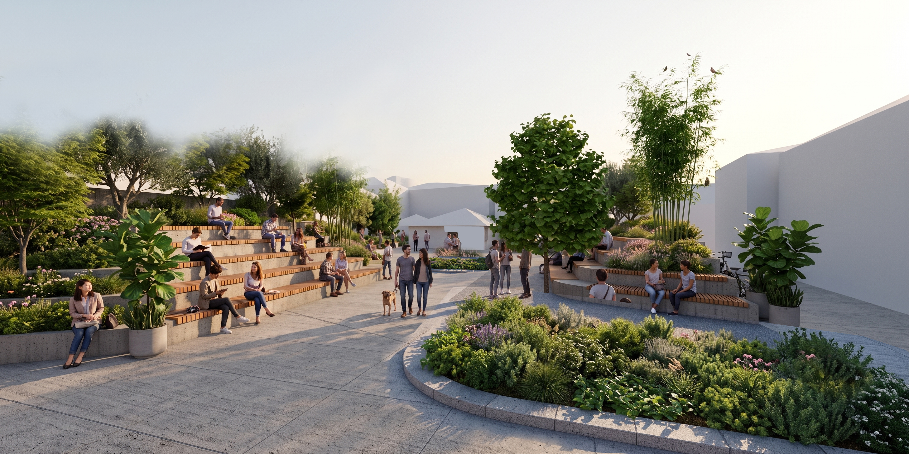

隠岐島うみまち交流広場
島根県隠岐の島町 西郷港の至近にある「海の見える交流館」の周辺広場の計画
計画地のある西郷港は、江戸時代から北前船の風待ち港として栄えた、島の玄関口です。湾口には愛宕山と金峯山が向かい合い、フェリーで入港するとき、湾口を抜けた先に街の風景がドラマチックに広がります。
反対に街から海を見返すとき、2つの山によってフレーミングされた特色ある海の風景が広がります。これが隠岐の原体験、原風景であると考えています。
この湾口とまちを結ぶ線を「海とまちをむすぶ軸」と名付け、広場の計画の背骨に据えました。
軸が海と出会う場所に、ステージを備えた賑わいの中心広場を配置しました。ステージの屋根は交流館の懸垂屋根と対になって軸をフレーミングし、海とまちを結ぶゲートをかたちづくります。
軸に沿ってまちへ進んだ先には、隠岐諸島の地層のイメージを写した段差状のベンチと在来の緑によるポケットパークを計画し、賑わいから憩いへと連鎖する一体の空間としました。
フェリーを待つ時間、来島する人を迎える時間を海を眺めながら心地よく過ごせる、現代の風待ち港の再生を目指した計画です。








